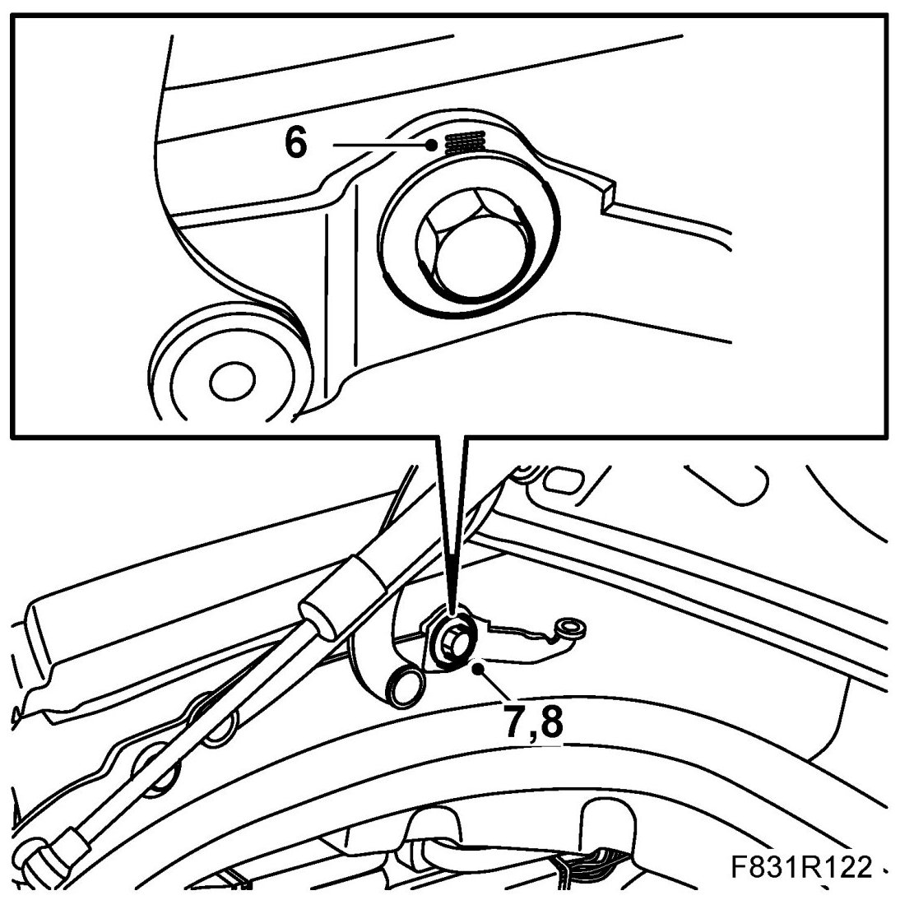
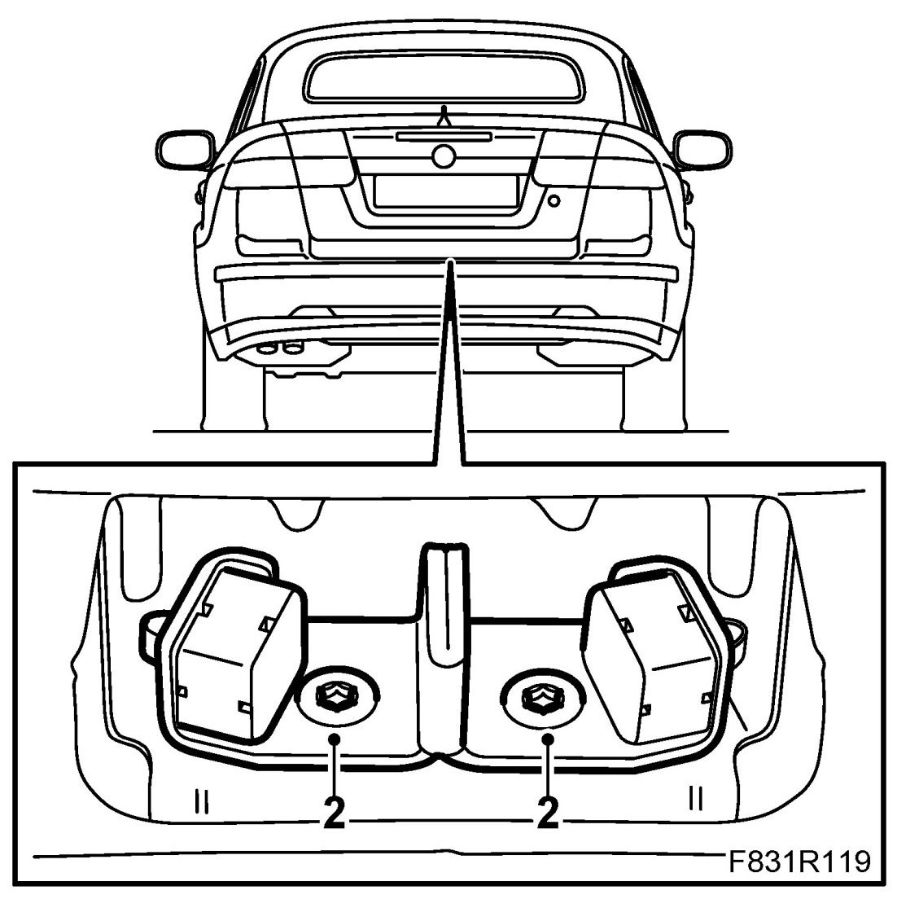
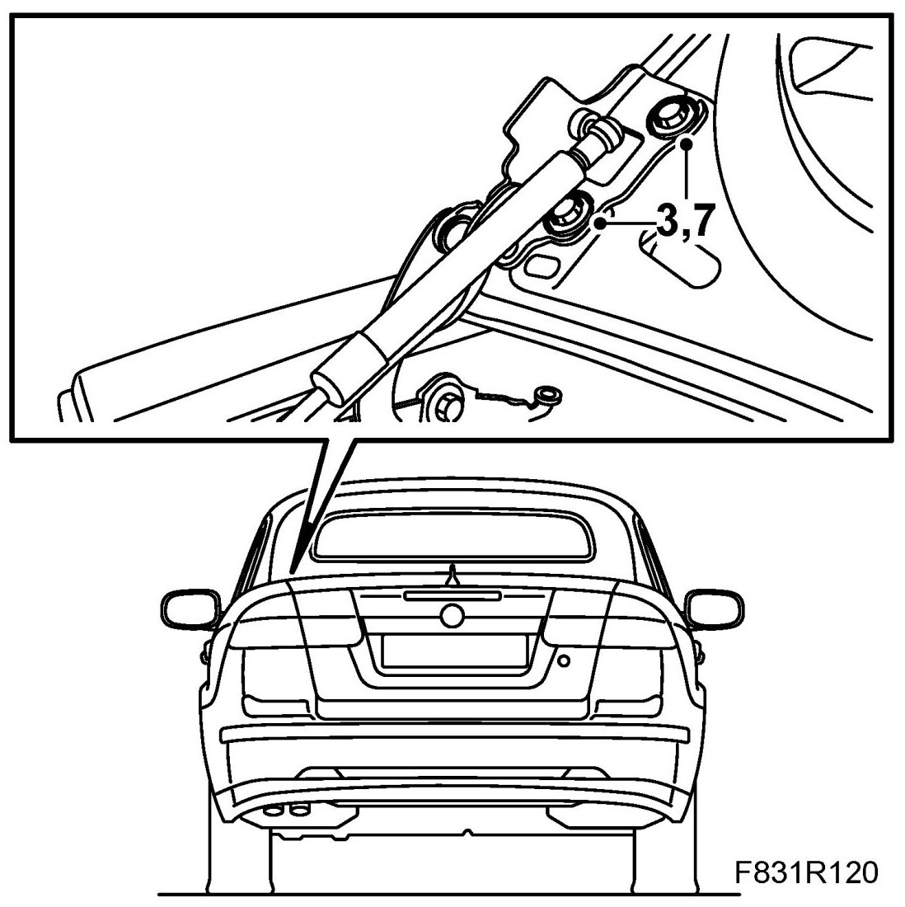
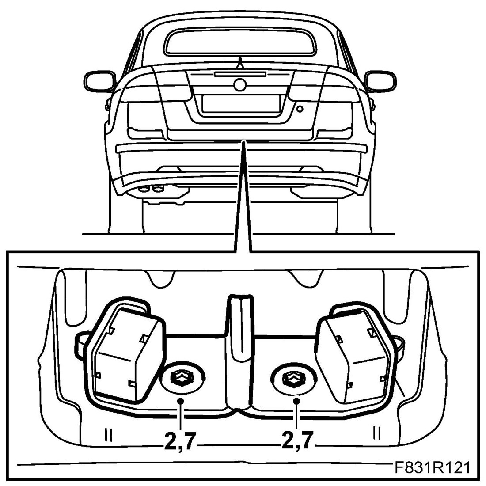

Boot Lid Adjustment, CV
Boot Lid Adjustment, CV
Adjustment, up, down
1. If the rear of the boot lid is too high or too low, adjust the boot lid lock plate, see below, "Adjustment, boot lid lock".
2. If the front of the boot lid is too high or too low, adjust in the following manner:
3. Close the boot lid.
4. Measure how much the boot lid deviates from the correct position.
5. Open the boot lid.
6. Read the graduation on the boot lid hinge.
NOTE: The boot lid hinges are graduated to facilitate adjustment.

7. Loosen the front bolt on the boot lid hinge.
8. Move the hinge towards the front to the desired height and tighten the bolts.
9. Repeat until the front of the boot lid is optimally adjusted.
Adjustment, lateral, backwards, forwards
1. Open the boot lid.
2. Loosen the boot lid lock plate bolts until the boot lid can be moved.

3. Loosen the bolts securing the boot lid on both sides until the boot lid can be moved in the hinge.

4. Close the boot lid slowly and carefully.
5. Align the boot lid by moving it until the size of the gap is the same all the way around.
6. Open the boot lid.
7. Fit the boot lid bolts.
8. Adjust the boot lid lock plate, see the following: "Adjustment, boot lid lock".
Adjustment, boot lid lock
1. Open the boot lid.
2. Loosen the boot lid lock plate bolts until the boot lid can be moved somewhat.

3. Move the lock plate to the centre position and the highest position. Do not tighten the bolts completely.
4. Close the boot lid slowly and carefully. The boot lid should close easily without tension.
5. Check that the size of the gap between the boot lid and side panel is correct.
6. Open the boot lid.
7. Loosen the boot lid lock plate bolts. Move the lock plate in the desired direction and tighten the bolts.
8. Repeat until the rear of the boot lid is optimally adjusted and the boot lid can be opened and closed with ease.